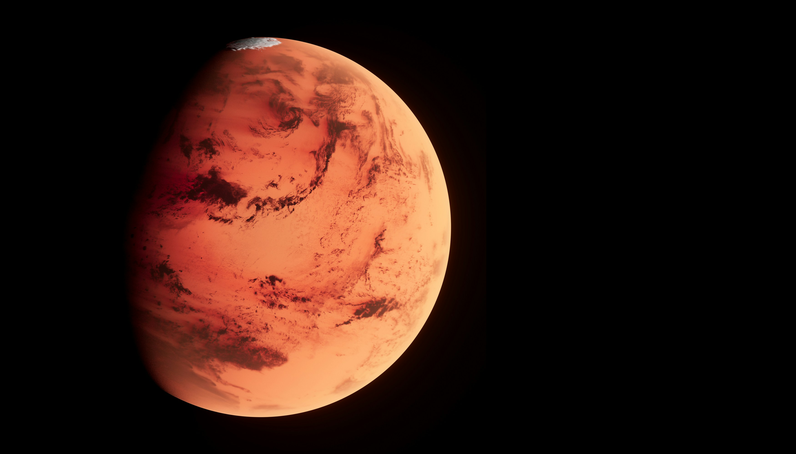

The Red Planet
About the Mars Rover Program
The NASA Mars Rover Program is a series of robotic space missions designed to explore the surface of Mars. These missions aim to study the planet’s geology, climate, and potential for past or present life. Each rover is a state-of-the-art mobile laboratory, equipped with advanced scientific instruments to collect and analyze samples.
From the early mission of Sojourner to the advanced Perseverance rover, NASA has continuously improved its technologies to better understand the Red Planet. These robotic explorers have traversed rocky terrains, captured stunning images, analyzed soil compositions, and even collected rock samples for future missions.